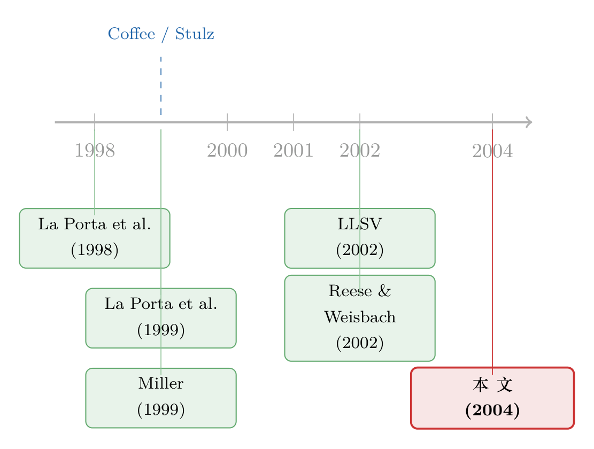

把股票挂到纽约，老板就少偷一点——一个关于「绑定」的估值故事
本文读的是 Doidge, Karolyi & Stulz (2004, Journal of Financial Economics)：1997 年底，在美国交叉上市的外国公司，托宾 q 比来自同一国家、未上市的同行高出 16.5%；若上的是纽交所、纳斯达克这样的主板交易所，这个溢价高达 37%。作者用一个极简的代理模型给出解释——美国上市本质上是控股股东向小股东做出的一纸「我以后少掏空」的承诺，而这纸承诺，只对那些手里攥着成长机会的公司才划算。
1 一个绕不开的悖论
先从一个数字说起：在美国之外的大型上市公司里，每 10 家只有不到 1 家选择把股票拿到美国来交叉上市。
这本该是件奇怪的事。你去问那些公司的经理，几乎人人都能背出一长串好处：降低资本成本、打通海外融资渠道、扩大股东基础、让股票更好交易、还能换来曝光度与声望（Mittoo, 1992；Fanto and Karmel, 1997）。而成本呢？无非是 SEC 的信息披露与合规要求、一点律师费和投行费——有些案例里，连这点初始费用都被存托银行替你掏了。
好处一大把，成本一丁点。那为什么绝大多数公司就是不来？
这是本文真正的钩子。它不是又一篇「上市有什么好处」的清单文章，而是反过来追问：如果上市这么好，为什么不是所有人都上？换句话说，上市一定有一个对某些人来说很高、对另一些人来说很低的隐性成本——能把这个成本找出来，才算真正讲清楚了这件事。
接着，一个自然的问题是：上市的公司，到底「值不值更多钱」？如果值，多出来的那块价值——作者称之为 交叉上市溢价 (cross-listing premium)——又是从哪里冒出来的？
2 把「好处清单」拆开看
文献里堆着一摞解释，作者先逐条过了一遍，目的是把它们一一排除，最后只留下一个。
第一类是风险分担 (risk sharing)。 早期的主流故事是：本国市场和世界市场被投资壁垒分割开，外国投资者很难持有你的股票；一旦在美国上市，你的风险被更广泛地分摊，要求的风险溢价就降低，资本成本随之下降。事件研究给了它不少弹药——Miller (1999) 发现，宣布在美上市平均带来 1.15% 的异常收益，来自新兴市场的公司是 1.54%，上主板交易所的更高达 2.63%。
但这个故事有个致命的漏洞：如果壁垒真的高到值得上市，那么一个国家里几乎所有公司都该挤过来上市才对——它解释不了「为什么不是所有人都来」。Lee (2003) 更直接地指出，随着一个国家累计的交叉上市数量增多，新上市的异常收益并没有衰减，这和风险分担假说的预测相反。
第二类是进入更发达的资本市场。 美国市场又深又有流动性，上市后融资更便宜。Lins, Strickland and Zenner (2003) 发现公司在美上市后融资约束放松了。但这同样推不出「只有少数人上市」。
第三类是信息披露与信号。 Cantale (1996)、Fuerst (1998)、Moel (1999) 这些模型说，高披露标准的市场上，敢来上市本身就是「我是高价值公司」的信号。
真正关键的一步在于第四类——绑定与监督 (bonding and monitoring)。 Coffee (1999, 2002)、Stulz (1999)、Reese and Weisbach (2002) 提出：在美国上市，等于把自己的投资者塞进了全世界保护得最好的那套法律与监管装置里。上了主板交易所的外国公司，要服从许多和美国本土公司一样的法律法规，还要承受来自媒体和投资圈更密集的监督。这套装置的作用，是抬高了控股股东「掏空」小股东的成本。
到这里，谜底的轮廓出现了。前三类解释都有一个共同的毛病：它们暗示的上市成本对所有公司都一样，于是推不出「为什么只有少数人上市」。而绑定假说不一样——它的成本是有差别的：对一个本来就想从公司里捞私利的控股股东来说，「以后不许捞了」这件事，代价可大可小，取决于他原本能捞多少、以及他还需不需要去外面融资。
于是反转出现：美国上市不是一项人人都该享受的福利，而是控股股东主动戴上的一副镣铐。愿意戴镣铐的，恰恰是那些手里有好项目、急需外部资金、因而愿意用「少掏空」换「低融资成本」的公司。 没有成长机会的公司，戴上镣铐却换不来什么，自然不来。
这个机制天然地把估值和「成长机会」绑在了一起，也天然地把溢价和「母国投资者保护」绑在了一起——这两点，正是后面三个可检验假设的来源。
3 模型：一纸承诺的代价与收益
这是一篇有正式模型的论文，值得把推导一步步走清楚。模型极简，但每一步都对应着前面那个直觉。
设定。 一家公司的控股股东持有现金流权（或者说股权）比例为 \(k\)。作为控制权的好处，他在分红之前先把公司现金流 \(C\) 的一部分 \(f\) 转移到自己口袋。现金流已归一化为现值。沿用 La Porta, Lopez-de-Silanes, Shleifer and Vishny（下称 LLSV, 2002）的思路，掏空有一个无谓损失 (deadweight cost)：它随投资者保护水平上升而上升，也随掏空比例上升而上升（掏得越多越难藏）。作者给它一个最简单的二次型：\(\tfrac12 b f^2 p C\)，其中 \(b\) 是常数，\(p\) 是母国适用于小股东的投资者保护质量（\(p\) 越大保护越好）。
于是，控股股东到手的总收益是下面这个表达式——这是整个模型的核心，我们把它标注开来看：
注意这里的张力：掏空 \(fC\) 全归控股股东（第二项），但掏空带来的无谓损失却要按 \(k\) 由他和所有股东一起承担（第一项里）。\(k\) 越大，他自己越心疼这份损失，掏空的冲动就越弱。
求解。 控股股东对 \(f\) 最大化上式：
$$ \max_{f}\; k\left(C - fC - \tfrac{1}{2}bf^2 pC\right) + fC $$
一阶条件为
$$ -kC - bfpkC + C = 0 $$
整理即得最优掏空比例：
$$ f = \frac{1-k}{bpk} $$
这一步的直觉很清楚：\(k\) 越大（控股股东自己的现金流权越多），他越倾向于规规矩矩地分红，掏空越少；\(p\) 越高（投资者保护越好），掏空也越少。这与 LLSV (2002)、Shleifer and Wolfenzon (2002) 的结论一脉相承。
代回。 把最优 \(f\) 代回目标函数并整理，得到不上市时控股股东的总收益：
$$ kC + \frac{1}{2}\frac{(1-k)^2}{bpk}\,C $$
第一项是分红，第二项是「控制权的净私利」，记作 \(v(p)C\)，其中 \(v(p)\) 是关于 \(p\) 的递减凸函数——保护越好，能捞的私利越少。
上市的取舍。 现在让公司在美国上市。上市做两件事：其一，把适用的投资者保护从 \(p\) 提升到 \(p_{U.S.} > p\)（于是掏空从 \(f\) 降到更低的 \(f_{U.S.}\)）；其二，上市让公司得以为价值 \(z\) 的成长机会融资——为简化，假设不上市就抓不住这些机会。上市后控股股东到手：
$$ k(C+z) + v(p_{U.S.})(C+z) $$
当上市收益超过不上市收益时，他才愿意上市。整理后这个条件是：
$$ kz + v(p_{U.S.})z > \big[v(p) - v(p_{U.S.})\big]C $$
左边是上市后能抓住的成长机会带给控股股东的净好处，右边是「以后少捞了」在原有现金流 \(C\) 上损失的私利。这一不等式，就是整篇文章的经济学心脏：成长机会 \(z\) 够大，才值得用私利损失去换。
由此解出临界成长机会 \(z^{*}\)——公司只有当 \(z > z^{*}\) 时才上市：
$$ z^{*} = \frac{\big[v(p) - v(p_{U.S.})\big]}{k + v(p_{U.S.})}\,C = \frac{(p_{U.S.} - p)(1-k)^2}{2bp\,p_{U.S.}\,k^2 + p(1-k)^2}\,C $$
对 \(p\) 求导可证 \(\partial z^{*}/\partial p < 0\)：母国保护越差，触发上市所需的成长机会门槛越高，因此真正去上市的那批公司，其成长机会也越好。 这给出第一个假设：
H1：在上市后保护水平 \(p_{U.S.}\) 给定时，来自弱保护国家的上市公司，其成长机会优于来自强保护国家的上市公司；并且一个国家中选择赴美上市的公司比例，随该国投资者保护的改善而上升。
估值。 从一个不拿私利的小股东视角看公司，托宾 q 在上市与不上市两种情形下分别为
$$ q= \begin{cases} C - fC - \tfrac12 bf^2 pC & \text{if not listed}\\[4pt] C + z - f_{U.S.}(C+z) - \tfrac12 b f_{U.S.}^2\, p_{U.S.}(C+z) & \text{if listed} \end{cases} $$
代入最优掏空比例后可得：投资者保护越好、成长机会越好，q 越高。两种情形相减，便得到交叉上市溢价：
$$ \varphi = z + \frac{1+k}{k(1-k)}\big[v(p)C - v(p_{U.S.})(C+z)\big] $$
由于小股东能分到 \(z\) 的一部分，溢价必为正，且随 \(z\) 递增——这是 H2。再对 \(p\) 求导：
$$ \frac{\partial \varphi}{\partial p} = \frac{1+k}{k(1-k)}\frac{\partial v(p)}{\partial p}\,C < 0 $$
即溢价随母国保护 \(p\) 下降而上升——这是 H3：
H2：其他条件不变，(a) 上市公司的 q 高于不上市公司；(b) 溢价随成长机会 \(z\) 增大。 H3：其他条件不变，公司的交叉上市溢价与母国投资者保护质量负相关——来自弱保护国家的公司，承诺的代价更大、放弃的私利更多，因而溢价更高。
三个假设环环相扣，全部从同一个不等式里长出来。这正是石川式的「围绕一个核心讲透」：整篇论文其实只在讲一句话——上市是控股股东用私利换成长，谁的成长更值钱、谁原本能捞得更多，谁的溢价就越高。
4 数据与识别
理论讲完，怎么验证？
作者用 Worldscope 数据库的全球公司样本，把「在美交叉上市」的外国公司与「来自同一国家但未上市」的公司放在一起比，主要看 1997 年底的横截面估值。被解释变量是托宾 q（公司价值相对于账面资产）。识别的核心，是在控制了一系列公司特征（规模、行业、成长机会代理变量等）和国家层面因素之后，看上市这个虚拟变量还能不能解释 q 的差异，以及这个差异是否随上市类型、母国投资者保护而系统性变化——这正好对应 H1–H3。
这里要诚实：这是一个横截面相关性的设计，不是干净的自然实验。上市是公司自己选的，存在自选择 (self-selection)。作者也清楚这一点——参考文献里专门列了 Heckman (1979)、Maddala (1983)、McFadden (1974) 这些处理样本选择与离散选择的工具，说明他们在正文里用选择模型去缓解内生性。但「缓解」不等于「消除」，这是后面要重点讨论的识别担忧。
5 主要结果
结果与理论高度吻合，且量级不小。
第一，溢价是真实存在的，而且取决于上市方式。 全样本里，赴美上市公司的 q 比同国未上市同行高 16.5%。但这是个平均数——一旦区分上市类型，差别巨大：上主板交易所 (exchange listing) 的公司溢价高达 37%；而场外市场 (OTC) 挂牌和 Rule 144a 私募的溢价要小得多。
这个排序本身就是对绑定假说的有力支持：交易所上市受美国法律法规的约束最强、监督最密，绑定最硬，所以溢价最高；OTC 和私募几乎不受这套装置约束，绑定最软，溢价最弱。一个纯粹的风险分担或融资便利故事，很难解释为什么「监管最严」的那条路反而最值钱。
作者还提醒，这个溢价的体量值得敬畏：它大约是著名的 多元化折价 (diversification discount)（Lang and Stulz, 1994；Berger and Ofek, 1995）的两倍。学界为多元化折价写了无数篇论文，却几乎没人认真解释过这个更大的交叉上市溢价。
第二，溢价在控制了大量国家与公司特征之后依然稳健地存在，不是被某个遗漏变量一冲就没的伪相关。
第三，成长机会被「定价」得不一样。 与 H2(b)、H3 一致，作者发现上市公司的成长机会被市场赋予了更高的价值，尤其是那些来自投资者保护更差国家的公司——他们用上市换来的「治理升级」幅度最大，市场也最买账。
6 文献脉络
把这篇论文放回它生长的脉络里，会看得更清楚。
最上游是 法与金融 (law and finance) 这条大河。La Porta, Lopez-de-Silanes, Shleifer and Vishny (1998) 的《Law and Finance》确立了「一国法律对投资者的保护，深刻塑造了它的金融结构」；随后 La Porta et al. (1999) 发现全世界大公司普遍由大股东控制，把「控股股东 vs 小股东」推到舞台中央；LLSV (2002) 则把投资者保护直接和公司估值挂钩，证明保护差的国家股权更便宜，因为价格已经反映了大股东能攫取的私利。本文模型里的掏空成本函数 \(\tfrac12 bf^2 pC\)，几乎就是 LLSV 框架的一个直接搬运。
另一条支流是跨境上市本身的研究。早期它被装进风险分担的瓶子里——Alexander, Eun and Janakiramanan (1988)、Foerster and Karolyi (1999)、Miller (1999) 用事件研究反复确认「赴美上市有正的公告效应」。Karolyi (1998) 的综述把这一脉的证据收得很全。

真正的转折点是 绑定假说的提出：Coffee (1999)、Stulz (1999) 从法律与公司金融的交汇处，提出上市是一种向投资者「绑定」承诺的机制；Reese and Weisbach (2002) 给出实证——公司在美上市后，反而在本国募了更多股本，因为小股东被保护得更好了。
本文站在这两条河的交汇处：它把 LLSV 的代理模型和绑定假说焊在一起，第一次为「交叉上市溢价」提供了一个完整的、可检验的理论，并把溢价的横截面变化（随上市类型、随母国保护）解释得严丝合缝。它的下游，是一整片关于「绑定到底有没有用」的争论——Siegel (2003) 就质疑过：如果美国根本执行不到你的海外资产，这种绑定是不是「形同虚设」？（关于「租来的法律到底管不管用」这个追问，可参见《租来的法律：把股票挂到纽约，真能管住自家的老板吗？》与《租一部更严的法律，老板手里的「控制权」就贬值了》。）
7 评论与延伸（Q&A + 研究方向）
(a) 几个可能的疑问
Q：这篇文章和「风险分担降低资本成本」的老故事，本质区别在哪？
在于成本是否有差别。风险分担假说里，上市的成本对所有公司大致相同，于是逻辑上「人人都该上市」，解释不了 90% 的公司不来。绑定假说的成本是控股股东放弃的私利——它对不同公司天差地别，于是天然预测「只有有成长机会、急需融资的公司才上」。前者解释不了选择，后者把选择内生化了。
Q：16.5% 的溢价，会不会只是因为「好公司才有本事去美国上市」的自选择，而非上市本身带来的？
这是最核心的识别担忧，作者自己也承认。横截面比较无法排除：是上市「制造」了高 q，还是高 q 的公司「选择」了上市。作者用选择模型（参考文献里的 Heckman、Maddala、McFadden）来缓解，但这依赖于模型设定与排除性约束的可信度，并不能彻底证因果。理想的检验需要外生冲击——比如某项突然改变上市可行性或成本的监管变动。
Q：为什么交易所上市溢价（37%）远高于 OTC 和私募？这恰恰是反对哪个假说的证据？
它最不利于「纯融资便利」假说。如果上市只是为了进美国深市场融资，那 OTC 也能蹭到不少流动性，溢价不该差这么多。但绑定假说预测得很准：交易所上市受美国法律约束最强、监督最密，绑定最硬，所以最值钱——溢价的排序本身就是机制的指纹。
Q：模型说「掏空的无谓损失随保护 p 上升而上升」，这是不是有点反直觉？
关键在于「掏空比例 f 给定时」的边际成本。保护越好，同样幅度的掏空越容易被发现、被起诉、被惩罚，于是单位掏空的无谓损失越高。这反过来压低了最优掏空 \(f=(1-k)/(bpk)\)——p 越大 f 越小。所以保护好的国家，均衡里掏空少、私利 \(v(p)\) 低，正是 LLSV 的核心。
Q：H3 说弱保护国家的公司溢价更高，可这些国家的公司不也整体估值更低吗？两者矛盾吗？
不矛盾，因为它们说的是两件事。整体估值低，是因为不上市时 \(v(p)\) 高、掏空重，q 被压低（横截面水平）。而溢价高，是因为这些公司一旦上市，治理升级的幅度 \(p_{U.S.}-p\) 最大，放弃的私利最多、释放的价值最多（上市与不上市的差值）。低基数 + 大跳升，完全可以并存。
Q：这个理论对今天还适用吗？毕竟 2002 年后有了 SOX，赴美上市成本大涨。
框架仍然适用，但参数变了。萨班斯-奥克斯利法案 (Sarbanes-Oxley) 抬高了上市的合规成本，相当于在模型里给上市加了一笔固定成本，会把临界门槛 \(z^{*}\) 推高，预测更少公司上市、且来的都是成长机会更突出的。事实上 SOX 后外国公司赴美上市确实降温、退市增多，与模型方向一致——这本身就是一个可做的检验。
(b) 几个可能的研究问题与提案
1. 把绑定假说搬到公司债/信用市场。 【经济故事】本文只看股权估值，但绑定首先该降低的是违约风险与债务代理成本——少掏空意味着债权人更安全。赴美上市后，外国公司的信用利差是否收窄？这是绑定假说一个尚未被充分挖掘的角落。 【可行性】中。需要把交叉上市公司匹配到它们的美元债或本币债二级利差（TRACE 对在美发行的外国债覆盖尚可，本币债则需 Markit/Refinitiv）。识别仍受自选择困扰，最好叠加 SOX 这类外生成本冲击做 DiD。
2. 用 SOX 作为外生冲击，给溢价做一次准实验。 【经济故事】本文的横截面无法定因果。2002 年 SOX 突然抬高上市成本，相当于对「绑定的价格」做了一次外生上调。若绑定假说为真，新上市公司的成长机会分布应向右移动，而存量上市公司的溢价应随合规负担的异质性而分化。 【可行性】高。Worldscope/Compustat Global + 上市类型与日期，标准的交错 DiD 设计；需警惕平行趋势与同期全球估值波动的混淆。
3. 外资持有人是不是绑定的「执行者」？ 【经济故事】绑定要真正约束控股股东，得有人盯着。赴美上市带来的美国机构投资者持股，可能才是溢价的微观传导渠道。把溢价拆解成「法律约束」与「外资监督」两块，能不能分开？ 【可行性】中。需要 13F／FactSet 的跨境持股数据匹配到交叉上市事件；识别外资的「监督」效应需借助持股的外生变动（如指数纳入）。可与本博客中外资持有人系列（如《外资真是「蝗虫」吗？》）对话。
4. 溢价的流动性成分有多大？ 【经济故事】本文把溢价几乎全部归给治理，但交易所上市同时大幅改善了流动性。用同一发行人在母国与美国两地挂牌的价差、深度数据，能否把溢价中的「流动性那一块」从「治理那一块」里剥出来？ 【可行性】中偏低。需要双重挂牌股票的高频订单簿数据，样本天然较小；但一旦拿到，是对机制的干净分解。
8 参考文献
- Alexander, G., Eun, C., Janakiramanan, S. (1988). International listings and stock returns: some empirical evidence. Journal of Financial and Quantitative Analysis 23, 135–151.
- Berger, P., Ofek, E. (1995). Diversification's effect on firm value. Journal of Financial Economics 37, 39–65.
- Coffee, J. (1999). The future as history: the prospects for global convergence in corporate governance and its implications. Northwestern University Law Review 93, 641–708.
- Coffee, J. (2002). Racing towards the top? The impact of cross-listings and stock market competition on international corporate governance. Columbia Law Review 102, 1757–1831.
- Foerster, S., Karolyi, G.A. (1999). The effects of market segmentation and investor recognition on asset prices: evidence from foreign stocks listing in the U.S. Journal of Finance 54, 981–1014.
- Heckman, J. (1979). Sample selection bias as a specification error. Econometrica 47, 153–161.
- Karolyi, G.A. (1998). Why do companies list shares abroad? A survey of the evidence and its managerial implications. Financial Markets, Institutions, and Instruments 7, 1–60.
- La Porta, R., Lopez-de-Silanes, F., Shleifer, A., Vishny, R. (1998). Law and finance. Journal of Political Economy 106, 1113–1155.
- La Porta, R., Lopez-de-Silanes, F., Shleifer, A. (1999). Corporate ownership around the world. Journal of Finance 54, 471–517.
- La Porta, R., Lopez-de-Silanes, F., Shleifer, A., Vishny, R. (2002). Investor protection and corporate valuation. Journal of Finance 57, 1147–1170.
- Lang, L., Stulz, R.M. (1994). Tobin's q, corporate diversification, and firm performance. Journal of Political Economy 102, 1248–1280.
- Lins, K., Strickland, D., Zenner, M. (2003). Do non-U.S. firms issue equity on U.S. stock exchanges to relax capital constraints? Journal of Financial and Quantitative Analysis, forthcoming.
- Miller, D. (1999). The market reaction to international cross-listing: evidence from depositary receipts. Journal of Financial Economics 51, 103–123.
- Reese, W., Weisbach, M. (2002). Protection of minority shareholder interests, cross-listings in the United States, and subsequent equity offerings. Journal of Financial Economics 66, 65–104.
- Shleifer, A., Wolfenzon, D. (2002). Investor protection and equity markets. Journal of Financial Economics 66, 3–27.
- Siegel, J. (2003). Can foreign firms bond themselves effectively by submitting to U.S. law? Unpublished working paper. MIT.
- Stulz, R.M. (1999). Globalization, corporate finance, and the cost of capital. Journal of Applied Corporate Finance 12, 8–25.